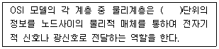

멀티미디어콘텐츠제작전문가(구) (2007-08-05 기출문제)
1과목: 멀티미디어개론
1. IPv4(Internet Protocol ver.4)의 주소 부족 문제를 해결하기 위해 도입한 IPv6는 몇 비트 주소체계를 가지는가?
- 32
- 64
- 128
- 256
(정답률: 알수없음)

2. IP(IPv4) 주소 203.240.100.1은 어느 클래스에 속하는가?
- 클래스A
- 클래스B
- 클래스C
- 클래스D
(정답률: 알수없음)
3. 정보통신 시스템의 기본 구성 요소가 아닌 것은?
- 구내 교환기
- 단말 장치
- 통신 제어장치
- 데이터 전송장치
(정답률: 알수없음)
4. 인터넷의 시초가 되는 최초의 네트워크는?
- ARPANET
- MILNET
- NSFNET
- CSNET
(정답률: 알수없음)
5. 프로토콜(protocol)의 기능으로 거리가 가장 먼 것은?
- 삭제(Remove)
- 단편화(Fragmentation)
- 재합성(Reassembly)
- 캡슐화(Encapsulation)
(정답률: 알수없음)
6. 다음 중 전기적인 접속 표준과 장치 간에 데이터의 물리적 전송 표준을 개발하는 기구는?
- EIA(Electronic Industries Association)
- ANSI(American National Standards Institute)
- ISO(International Organization for Standardization)
- ITU-T(International Telecommunications Union Telecommunication)
(정답률: 알수없음)
7. 오디오 및 비디오와 같은 실시간 데이터의 신뢰성 있는 전송을 위해 제안된 인터넷 표준 프로토콜은 무엇인가?
- IP(Internet Protocol)
- RTP(Real-time Transport Protocol)
- HTTP(HyperText Transfer Protocol)
- FTP(File Transfer Protocol)
(정답률: 알수없음)
8. 인터넷 보안 프로토콜과 가장 관련이 적은 것은?
- S-HTTP(Secure HyperText Transfer Protocol)
- SSL(Secure Sockets Layer)
- SGML(Standard Generalized Markup Language)
- S/MIME(Security Services for Multipurpose Internet Mail Extension)
(정답률: 알수없음)
9. 웹서버 구축 시 활용하는 소프트웨어로 거리가 가정 먼 것은?
- APACHE
- IIS
- HTTP
- PWS
(정답률: 알수없음)
10. 물리적인 주소(MAC)를 IP 주소로 변환하는 서비스를 제공하는 서버는?
- DHCP Server
- DNS Server
- ARP Server
- RARP Server
(정답률: 알수없음)
11. 멀티미디어 특징으로 거리가 가장 먼 것은?
- 선형성(linear)
- 디지털화(digitalization)
- 통합성(integration)
- 쌍방향성(interaction)
(정답률: 알수없음)
12. 멀티미디어 관련 장치 중 입력장치로 거리가 가장 먼 것은?
- 스캐너(scanner)
- 디지타이저(digitizer)
- 터치스크린(touch screen)
- 프로젝터(projector)
(정답률: 알수없음)
13. 그레이스케일 및 컬러정지 화상의 압축 및 복원방식에 관한 국제 표준안으로 디지털카메라 등의 저장 포맷으로 사용되는 것은?
- GIF
- PCX
- JPEG
- BMP
(정답률: 알수없음)
14. 다음 중 아날로그 TV 표준형식으로 거리가 가장 먼 것은?
- NTSC
- PAL
- SECAM
- HDTV
(정답률: 알수없음)
15. 근거리에 놓여 있는 컴퓨터와 이동단말기, 가전제품 들을 무선으로 연결하여 쌍방향으로 실시간 통신을 가능하게 해주는 규격을 말하거나 그 규격에 맞는 제품을 이르는 말은?
- 단방향 통신(Simplex)
- 쌍방향 통신(Duplex)
- 블루투스(Bluetooth)
- HTTP(hyper text transfer protocol)
(정답률: 알수없음)
16. 아날로그 이미지를 디지털화하는 과정에 있어 양자화(quantization)에 대한 설명으로 올바른 것은?
- 연속적인 색상의 갑을 이산치로 변환하는 것을 말한다.
- 아날로그 값의 샘플을 픽셀로 표현하는 것이다.
- 기본 이미지에 임의의 변형을 가하여 특수한 효과를 얻는 것이다.
- 아날로그 값의 샘플을 모니터에 출력하는 작업을 나타낸다.
(정답률: 알수없음)
17. 하이퍼텍스트 문서는 무엇을 통해 전달되는가?
- DNS
- TELNET
- 포인터
- 홈페이지
(정답률: 알수없음)
18. 하이퍼미디어를 구성하는 기본적인 구성 요소가 아닌 것은?
- 리스트
- 링크
- 앵커
- 노드
(정답률: 알수없음)
19. 웹브라우저에서 직접 보여주지 못하는 사운드나 동영상 파일들을 웹상에서 구현할 수 있도록 브라우저의 기능을 확장시켜주는 프로그램은 무엇인가?
- Cookie
- FTP
- HTML
- Plug-in
(정답률: 알수없음)
20. 현재 사용되고 있는 데이터 스트림을 위해 데이터 블록이 미리 검색되어 메모리에 저장되는 방법은 무엇인가?
- 캐싱
- 버퍼링
- 미러링
- 스캔
(정답률: 알수없음)
21. CRT모니터에 대한 설명으로 거리가 가장 먼 것은?
- 전자총에 의해 발사된 전자빔이 편광판 사이를 지나 새도우 마스크 금속판을 걸쳐 형광물질에 도달한다.
- 컬러 CRT는 빛의 삼원색인 RGB를 사용하여 화면에 표시한다.
- 장시간 이용 시 눈의 피로가 발생한다.
- 해상도가 낮을수록 선명도가 좋다.
(정답률: 알수없음)
22. 디지털 악기 제조업체 및 관련 산업체들의 컨소시엄을 통해 제정된 규약으로 디지털 악기와 컴퓨터 간의 인터페이스를 위한 표준안은?
- Real Audio
- MP3
- MIDI
- AU
(정답률: 알수없음)
23. 다음 중 MPEG의 동영상 압축절차에 해당하지 않는 것은?
- 전처리
- 변환
- 양자화
- 트위닝
(정답률: 알수없음)
24. 초당 발생한 신호의 변화 상태를 나타내는 변조 속도의 기본 단위는?
- Baud
- Bit
- Packet
- Cell
(정답률: 알수없음)
25. 인터넷 방송에 관한 성명 중 거리가 가장 먼 것은?
- 양방향성을 갖는다.
- 채널수가 제한적이다.
- 방송 외에 부가적인 내용을 전달할 수 있다.
- 사용자가 원하는 시간에 볼 수 있다.
(정답률: 알수없음)
2과목: 멀티미디어기획및디자인
26. 마케팅 전략의 종류에 해당하지 않는 것은?
- 경영 합리화 전략
- 크리에이티브 전략
- 시장 세분화 전략
- 제품 차별화 전략
(정답률: 알수없음)
27. 다음 중 기업의 이윤추구를 위한 디자인 마케팅의 4가지 기본 요소에 포함되지 않는 것은?
- 제품
- 유통
- 문화
- 가격
(정답률: 알수없음)
28. 다음 중 기획서 작성 시 유의사항과 거리가 먼 것은?
- 요점을 알 수 있도록 쓰기보다 서술형으로 기록한다.
- 기획의 목적, 목표를 명확하게 작성한다.
- 그림, 일러스트레이션을 효과적으로 사용한다.
- 문장의 의미를 명료하게 쓰도록 한다.
(정답률: 알수없음)
29. 다음 중 디자인의 필수 요소로서 물체의 조성설질을 뜻하는 것은?
- 색채
- 질감
- 크기
- 빛
(정답률: 알수없음)
30. 디자인의 조건으로 거리가 먼 것은?
- 합목적성
- 심미성
- 질서성
- 신뢰성
(정답률: 알수없음)
31. 목적에 따른 디자인 분류 중 거리가 가장 먼 것은?
- 평면 디자인
- 포장 디자인
- 시각 전달 디자인
- 리-디자인
(정답률: 알수없음)
32. 광원으로부터 나오는 광선이 물체에 비추어 반사, 분해, 투과, 굴절, 흡수될 때 안구의 망막과 여기에 따르는 시신경에 자극하여 일어나는 감각 현상은 디자인 요소 중 무엇에 해당하는가?
- 형태
- 색채
- 질감
- 빛
(정답률: 알수없음)
33. 디자인의 원리에 대한 설명으로 거리가 가장 먼 것은?
- 형, 색, 질감 등의 조화를 통하여 시각적인 통일을 이룰 수 있다.
- 유사조화란 동일 요소들의 조합에 의해서 이루어지는 것으로 반드시 요소가 동일하여야 이루어진다.
- 디자인의 미(美)적인 조화를 위해서는 통일과 변화를 적절하게 함께 표현하는 것이 바람직하다.
- 대칭이랑 균형의 가정 전형적인 구성형식으로 가장 일반적인 균형이 잡힌 형태를 말한다.
(정답률: 알수없음)
34. 디자인 시 편안하고, 안정적인 느낌을 주는 정렬은?
- 수평
- 수직
- 사선
- 곡선
(정답률: 알수없음)
35. 단조로움과 규칙적임에서 벗어나 사용자의 관심과 시선을 집중시키고자 할 때 사용하는 가장 효과적인 미적 형식 원리는?
- 반복
- 강조
- 점이
- 통일
(정답률: 알수없음)
36. 좋은 웹 내비게이션 설계 시 고려해야 할 사항으로 적절하지 않은 것은?
- 쉽게 익힐 수 있어야 한다.
- 사이트의 목적에 적합해야 한다.
- 사용자가 잘못된 명령을 내려도 올ㅇ은 명령을 내릴 때까지 기다려야 한다.
- 명확한 시각적 메시지를 제공해야 한다.
(정답률: 알수없음)
37. 다음 중 GOOD 웹사이트의 조건에 대한 설명으로 거리가 가장 먼 것은?
- 웹사이트의 목적을 충분히 전달해야 한다.
- 시각적, 기능적으로 참신해야 한다.
- 사용하기 편리해야 한다.
- 자기만의 스타일을 고집해야 한다.
(정답률: 알수없음)
38. 타이포그래피(typography)에 대한 설명으로 거리가 가장 먼 내용은?
- ‘글자’라는 의미의 그리스어 ‘typewriter'에서 유래하였다.
- 글자를 이용한 디자인으로 예술과 기술이 합해진 영역이다.
- 글자체, 글자크기, 글자사이, 글줄사이, 여백 등을 조절하여 전체적으로 읽기 편하도록 구성하는 표현기술이다.
- 전통적으로 활판인쇄술을 의미했으나 현대에서는 기능이나 미적인 면에서 효율적으로 운용하는 기술이나 학문으로 통용되고 있다.
(정답률: 알수없음)
39. 픽토그램(Pictogram)에 대한 설명 중 옮지 않은 것은?
- 언어를 대신하여 특정 대상의 특성이나 방법을 표현하는 그래픽 심벌을 말한다.
- 수명이 오래 갈 수 있는 조형성이 있어야 한다.
- 디자인 폴리시(Design Policy)에 의한 기초전략이 있어야 한다.
- 청각 전달의 기능을 주 목적으로 한다.
(정답률: 알수없음)
40. 책의 장, 절 형식의 구조를 멀티미디어로 전환하는 구조로서 메뉴가 많을 경우 유사한 내용끼리 묶어서 사용하면 효과적이지만 사용자는 자신이 얼마만큼 범위의 정보를 얻을 수 있는지 알기가 어려운 단점이 있는 멀티미디어 구조형식은?
- 선형구조
- 계층구조
- 혼합구조
- 하이퍼텍스트구조
(정답률: 알수없음)
41. 그래픽을 표시하는 방법 중 벡터 방식의 이미지에 대한 설명으로 옳은 것은?
- 픽셀이라고 하는 점들의 집합이다.
- 이미지의 선, 곡선, 원 등의 (기하학적) 구성요소를 수학적으로 표현한다.
- 각 픽셀은 하나 이상의 색상을 나타낼 수 있다.
- 래스터(raster)방식이라고도 한다.
(정답률: 알수없음)
42. 그래픽 작업을 할 수 있도록 각 화면의 개략적인 구성과 글을 자세하게 기술하는 것을 말하는 것은?
- 사운드 소스(sound source)
- 그래픽 이미지(graphic image)
- 텍스트(text)
- 스토리보드(story board)
(정답률: 알수없음)
43. 황금분할에 대한 설명으로 옳지 않은 것은?
- 그리스 시대부터 미적인 비례의 전형으로 사용되어 왔다.
- 신의 비례라고도 한다.
- 모듈러의 개념이라고도 한다.
- 가로 세로의 비율이 1:1.618일 때를 말한다.
(정답률: 알수없음)
44. 다음 중 점의 동적 정의를 설명한 것은?
- 점의 이동 흔적
- 면의 한계 또는 면의 교차
- 위치만 있고 크기는 없다.
- 물체가 차지하고 있는 한정된 공간
(정답률: 알수없음)
45. 면의 이동이 자취이며 길이, 너비, 형태와 공간, 표면, 방위, 위치 등의 특징을 가지며, 평면의 확장이다. 각도를 가진 방향으로 이동하거나 면의 화전에 의해서 생기는 것을 무엇이라 하는가?
- 점
- 선
- 면
- 입체
(정답률: 알수없음)
46. 비트맵 이미지의 설명으로 가장 먼 것은?
- 여러 개의 점(Pixel)으로 표시되는 방식이다.
- 작성된 그림을 확대 또는 축소할 경우에는 그림의 모양, 외곽선 부분이 변형된다.
- 점(Pixel)의 수가 많을수록 해상도가 높다.
- 가장 대표적인 방식 프로그램은 일러스트레이터, CAD이다.
(정답률: 알수없음)
47. Pixel 에 대한 설명으로 거리가 가장 먼 것은?
- Picture + element 의 결합으로 만들어진 용어이다.
- 8bit 이미지 상의 한 개 픽셀은 8가지 색상표현이 가능하다.
- 한 픽셀에 대한 데이터를 저장하기 위해 몇 개의 비트를 사용하는가를 색심도라고 한다.
- 이미지에서 한 픽셀의 위치 정보는 직교 좌표계의 x, y 좌표값으로 표시한다.
(정답률: 알수없음)
48. 다음 레터링(lettering)에 관한 설명 중 거리가 가장 먼 것은?
- 글자라는 소재를 사용하여 어떤 사고나 의도를 표현하고 전달하려는 것이다.
- 활자와 여러 가지 요소들을 이용하여 지면을 아름답고 내용이 충실히 전달되도록 하는 것이다.
- 개성적이고 부드러우며 임의의 공간, 임의의 형태, 대소, 강약 등 표현이 자유롭다.
- 글자를 주체로 한 디자인 및 타이포그래피의 기초 분야 중 하나이며 디자인적으로 제작되어야 한다.
(정답률: 알수없음)
49. 가산혼합에 대한 설명으로 옳지 않은 것은?
- 가법혼색 또는 가색혼합이라고 한다.
- 가산혼합에서의 보색을 섞으면 회색 또는 흑색이 된다.
- 가산혼합의 원리는 컬러텔레비전을 비롯하여 조명들에도 이용되고 있다.
- Red, Greed, Blue 의 3색을 여러 강도로 섞으면 어떤 색이라도 얻을 수 있다.
(정답률: 알수없음)
50. 그림물감이나 인쇄용 잉크 등을 이용하여 만들어진 인쇄에 표현되는 색상은 색을 배합하여 나타내는데, 다양한 색을 표현한다고 하여 배합색상이라고도 하는 색상은?
- RGB
- CMYK
- Lab
- Grayscale
(정답률: 알수없음)
3과목: 멀티미디어저작
51. 프로그램 언어(Language)의 분류에 있어서 1990년대 등장한 제 5세대 언어의 특징 중 거리가 가장 먼 것은?
- 지식기반 시스템(Knowledge-based system)
- 사용자 중심언어에서 기계처리 중심언어로 발전
- 자연어 처리(Processing of human language)
- 인공지능 분야에 기반을 둔 언어
(정답률: 알수없음)
52. 객체지향 언어에서 객체의 상태 및 기능을 표현하는 것이 아닌 것은?
- 멤버변수
- 멤버속성
- 멤버함수
- 멤버호출
(정답률: 알수없음)
53. Asymetrix 사에서 개발한 제품으로 객체지향적 제작환경을 제공하는 가장 대표적인 멀티미디어 저작도구는?
- 디렉터(director)
- 툴북(toolbook)
- 플래시(flash)
- 자바(java)
(정답률: 알수없음)
54. 멀티미디어의 정보설계 방법 중 가장 단순한 구조로 연속된 일련의 정보를 순차적으로 볼 수 있게 구성하는 것은?
- 선형구조
- 계층구조
- 대화형구조
- 데이터베이스구조
(정답률: 알수없음)
55. 사용자의 여러 가지 반응에 따라 분기하고 사용자의 선택에 따라 보다 상세한 내용을 표시하는 형태는 멀티미디어 저작 도구의 어떤 기능에 해당하는가?
- 스크립트 기능
- 상호작용 기능
- 프로그램 기능
- 확장 기능
(정답률: 알수없음)
56. HTML4.0에서는 ＜U＞ 태그를 사용하지 않도록 권장하고 있다. 그렇다면 스타일시트(CSS)에서 ＜U＞태그를 사용한 것과 같은 효과를 내기 위한 스타일 정의로 맞는 것은?
- text-style:underline
- text-decoration:underline
- text-line:underline
- text-variation:underline
(정답률: 알수없음)
57. 사용자가 작성한 HTML문서에 있는 태그와 특수기호까지 웹브라우저 화면에 그대로 보여 주게 하는 태그는?
- ＜pre＞
- ＜xmp＞
- ＜sup＞
- ＜dfn＞
(정답률: 알수없음)
58. 다음 중 HTML 태그의 설명이 옳지 않은 것은?
- ＆nbsp; : 공백문자
- ＜p＞ : 단락구분
- ＜br＞ : 행구분
- ＜pre＞ : 들여쓰기
(정답률: 알수없음)
59. 글자체, 줄 간격, 웹페이지의 배경 등을 자유롭게 설정할 수 있으며, 하나의 스타일시트파일을 만들어 여러 개의 웹문서에 적용할 수 있는 것은?
- HTML
- COBOL
- VRML
- CSS
(정답률: 알수없음)
60. 다음 중 HTML에서 bgproperties="fixed"와 같은 기능을 하는 CSS(cascading style sheet)는 무엇인가?
- background-position
- background-attachment
- letter-spacing
- line-height
(정답률: 알수없음)
61. DHTML의 구성요소로 거리가 가장 먼 것은?
- CGI
- CSS
- HTML
- javascript
(정답률: 알수없음)
62. XML(Extensible Makeup Language)에 대한 설명으로 거리가 가장 먼 것은?
- XML태그는 대소문자 구분을 한다.
- XML은 자신의 문서구조와 자신의 태그를 정의할 수 있다.
- XML은 유니코드를 지원하지 않는다.
- XML은 파일 또는 데이터베이스에 데이터를 저장할 수 있다.
(정답률: 알수없음)
63. 플래시MX의 액션 중 fscommand의 명령과 인수에 대한 설명으로 거리가 가장 먼 것은?
- quit 명령은 인수를 생략하여 사용할 수 있다.
- fullscreen 명령에서 인수로 true를 사용하면 전체 화면 모드로 Flash 플레이어를 지정한다.
- allowscale 명령에서 인수로 true를 사용하면 동영상이 원래 크기로 보이도록 설정하는 것이다.
- exec 명령은 응용프로그램의 경로를 인수로 사용하여 프로젝터로 부터 응용프로그램을 실행한다.
(정답률: 알수없음)
64. 플래시MX의 액션스크립트를 이용하여 자바스크립트 내장함수를 실행시키는 구문으로 맞는 것은?
- JavaScript("javascript:alert('FlashMX and JavaScript');");
- JavaScript:alert('FlashMX and JavaScript');
- getURL("javascript:alert('FlashMX and JavaScript');");
- getURL:alert('FlashMX and JavaScript');
(정답률: 알수없음)
65. 플래시 액션스크립트에 관한 설명이다. 가장 바르게 설명한 것은?
- attachMovie() : 심벌로부터 무비클립 인스턴스를 복제하여 다른 인스턴스를 생성한다.
- duplicateMovieClip() : 라이브러리 내의 인스턴스를 생성하여 배치한다.
- loadVariables() : 텍스트 파일 등을 읽어 들여 무비클립이나 변수 값들을 설정한다.
- hitTest() : 키보드의 키 값 입력을 감지한다.
(정답률: 알수없음)
66. 플래시에서 사운드 삽입 시 파일 최적화를 위해 mp3파일을 직접 스트리밍 할 수 있게 해주는 액션은?
- loadSound
- openSound
- addSound
- insertSound
(정답률: 알수없음)
67. 플래시 무비를 최적화시키는 방법으로 거리가 가장 먼 것은?
- 무비에서 여러 번 사용할 오브젝트는 심벌로 등록하여 활용한다.
- 외부에서 불러온 벡터 이미지는 Break Apart한 후, Optimize를 적용하여 불필요한 곡선수를 줄인다.
- 비트맵 파일은 되도록 동적인 요소로 사용한다.
- 필요 없는 프레임과 키프레임은 삭제한다.
(정답률: 알수없음)
68. 무비클립 인스턴스의 이벤트를 다루는데 사용되는 이벤트 핸들러로 적절한 것은?
- Clip
- Event
- onClipEvent
- onMovie
(정답률: 알수없음)
69. 매크로미디어 사에서 개발한 디렉터의 스크립트 언어는?
- 링고
- 캐스트
- 아트웨어
- 하이퍼토크
(정답률: 알수없음)
70. 디렉터8.0에서 디렉터 무비를 쇽웨이브 무비가 포함된 웹문서로 변환하기 위해 기분적으로 제공되는 출판기능은?
- 플래시(flash)
- 프리미어(premiere)
- 퍼블리시(publish)
- 하이퍼텍스트(hyper text)
(정답률: 알수없음)
71. 오쏘웨어(Authoware)의 타이틀, 디렉터의 무비 등 웹페이지 상에서 실시간으로 볼 수 있게 하는 기술은?
- Realaudio
- shockwave
- adobe premier
- RealPlayer
(정답률: 알수없음)
72. C 언어와 구문이 비슷하며, sed, awk, tr 등과 같은 기능은 포함하는 스크립트 프로그래밍 언어는?
- Javascript
- Perl
- REXX
- FORTRAN
(정답률: 알수없음)
73. 다음 중 자바(Java) 언어의 특징에 대한 설명으로 거리가 가장 먼 것은?
- 자바는 하드웨어에 종속적이며 구조체, 공용체, 포인터를 지원한다.
- 자바는 플랫폼에 독립적인 언어이다.
- 분산 환경에 적합하고, 높은 성능과 객체지향 및 멀티쓰레드를 지원하는 언어이다.
- 한번 쓰여진 코드는 시스템에 따른 별도의 이식 없이 사용할 수 있다.
(정답률: 알수없음)
74. 다음 중 자바스크립트(Javascript) 주석의 시작 기호로 맞는 것은?
- //
- */
- {
- /
(정답률: 알수없음)
75. 자바(Java)개발 환경에서 컴파일 과정 후에 생성되는 코드 확장자는?
- class
- java
- zip
- mov
(정답률: 알수없음)
4과목: 멀티미디어제작기술
76. ( ) 안에 들어갈 적당한 단어는?

- 비트
- 프로그램
- 프레임
- 패킷
(정답률: 알수없음)
77. TCP/IP 모델에서 TCP, UDP와 같은 프로토콜이 동작하는 계층은?
- Host-to-Network Layer
- Internet Layer
- Transport Layer
- Application Layer
(정답률: 알수없음)
78. 오디오파형을 디지털화하는데 있어 표본화율(Sampling rate)에 대한 설명으로 옳지 않는 것은?
- 표본화율이 높을수록 원음에 가깝다
- 표본화율이 높을수록 데이터양이 줄어든다.
- 44100Hz라는 표본화율은 22⑤0Hz의 주파수까지 표현할 수 있다.
- 나이퀴스트(Nyquist)의 표본화 법칙을 활용한다.
(정답률: 알수없음)
79. 다음 중 주파수와 관련된 설명 중 잘못된 것은?
- 주파수는 음의 높낮이와 관련이 있다.
- 주파수가 크면 고음이고 작으면 저음이다.
- 주파수는 사운드 파형의 반복횟수이다.
- 측정 단위로는 초당 진동횟수인 Octave가 사용된다.
(정답률: 알수없음)
80. 디지털 영상으로 만들어진 데이터를 극장용 필름의 규격에 맞게 출력하는 작업을 무엇이라 하는가?
- D-6
- 샘플링(sampling)
- 텔레시네(telecine)
- 키네스코프(kinescope)
(정답률: 알수없음)
81. 우리나라에서 채택하고 있는 아날로그 지상파 TV의 표준 방식은?
- NTSC
- PAL
- SECAM
- VOD
(정답률: 알수없음)
82. 디지털 신호가 지연되어 전달되거나 기기 간의 저항이 제대로 매칭되지 못해 발생하는 신호의 왜곡으로 이 에러가 심하면 음이 ‘찌직’거리거나 ‘따닥따닥’ 하는 정전기성 잡음이 들리게 되는 이 에러를 무엇이라 하는가?
- 앨리어싱(alising)
- 지터(Jitter)
- 스트림(stream)
- 절환 오차
(정답률: 알수없음)
83. 디지털비디오나 오디오의 데이터를 압축 또는 해제하는 알고리즘을 총칭하는 것은?
- 코덱(CODEC)
- 합성(Compositing)
- 코드분할(CDMA)
- 편집(Editing)
(정답률: 알수없음)
84. 어떤 사물의 형상을 전혀 다른 형상으로 점차 변형시키는 기법을 무엇이라 하는가?
- 크로마키(Chromakey)
- 모핑(Morphing)
- 매트 페인팅(Matte Painting)
- 애니메트로닉스(Animatronics)
(정답률: 알수없음)
85. 비디오 압축 기술 중 MPEG-2 방식의 설명으로 거리가 가장 먼 내용은?
- 목표 전송률은 0.8 Mbit/sec 이하이다.
- MPEG-1에 대한 순방향 호환성을 지원한다.
- 광범위한 신호형식에 대응하기 위해 프로파일(profile) 및 레벨(level)에 따라 복수개의 사양이 정해져 있다.
- 순차주사(noneinterlace)방식과 격행주사(Interlace) 방식 모두를 지원한다.
(정답률: 알수없음)
86. MPEG-7에 대한 설명으로 거리가 가장 먼 것은?
- 멀티미디어 정보의 효율적인 색인화와 검색을 목적으로 하고 있다.
- 멀티미디어 정보의 제작, 전송, 저장, 유통 및 검색 분야에 활용될 수 있다.
- 고화질 디지털 영상을 이용한 HDTV 방송 실현을 목표로 한다.
- 다양한 멀티미디어 정보를 기술하기 위한 표준화 방안이다.
(정답률: 알수없음)
87. 비디오 압축 기술에 있어 적정한 압축방법으로 거리가 가장 먼 것은?
- 프레임 수(fps)의 축소
- BMP파일 포맷으로 축소
- 프레임 크기(Number of Pixels)의 축소
- 픽셀 당 컬러 비트 수(Color Bit Depth)의 축소
(정답률: 알수없음)
88. 영상 단위 중 동일한 시간과 장소에서의 일어나는 일련의 상황이나 사건을 나타내며, 여러 개의 컷(cut)이 모여 하나의 장면을 이루는 것은?
- Take
- Sequence
- Scene
- shot
(정답률: 알수없음)
89. 넌 리니어(Non-Linear) 영상 편집 방법에 대한 장점으로 거리가 가장 먼 것은?
- 유연성과 속도감을 가능하게 한다.
- 테이프 대 테이프 편집이 실시간으로 이루어진다.
- 음향 및 비디오 트랙들을 동시에 사용할 수 있다.
- 비순차적 방식으로 편집이 가능하다.
(정답률: 알수없음)
90. 물체 경계면의 픽셀을 물체의 색상과 배경의 색상을 혼합해서 표현함으로써 물체의 경계면을 부드럽게 보이도록 하는 방법은?
- 스캐닝(Scanning)
- 매핑(mapping)
- 랜더링(rendering)
- 앤티앨리어싱(Anti-aliasing)
(정답률: 알수없음)
91. 인간의 움직임을 만들어내는 가장 자연스러운 방법으로 3차원 컴퓨터 애니메이션의 생성을 위해 가장 많이 사용되는 기술은?
- 절차적 애니메이션(Procedural Animation)
- 키 프레임 애니메이션(Key-frame Animation)
- 모션 캡처(Motion Capture)
- 역운동학(Inverse Kinematics)
(정답률: 알수없음)
92. 전기적인 신호를 합성하여 음을 생성하는 장치를 의미하는 것은?
- 믹서(Mixer)
- 샘플러(Sampler)
- 신디사이저(Synthesizer)
- 미디 인터페이스 카드(MIDI Interface Card)
(정답률: 알수없음)
93. 다음 중 어셈블 편집(Assemble Editing)을 설명한 것은?
- 스위처, 오디오믹서 등을 이용한 효과편집
- 타임라인 상에서 두 개 이상의 영상을 합성하는 편집
- 편집대본의 순서로 컷과 컷을 연결하는 기본적인 편집
- 일부분의 영상 또는 음성트랙에 다른 영상 등을 삽입하는 편집
(정답률: 알수없음)
94. 사운드(sound)를 구성하는 기본 요소로 가장 거리가 먼 것은?
- 주파수(Frequency)
- 효과(effect)
- 진폭(Amplitude)
- 음색(Tone Color)
(정답률: 알수없음)
95. 디지털 오디오 레코딩 시 고려사항으로 거리가 가장 먼 것은?
- 장비의 규모
- 음색밸런스
- 주파수 범위
- 믹싱상태
(정답률: 알수없음)
96. 정지 사진이나 한 장의 그림에 해당되는 영상의 시간적 최소 단위는?
- Cut
- Shot
- Frame
- Scene
(정답률: 알수없음)
97. 다음 중 벡터 방식의 파일 포맷은?
- BMP(BitMaP)
- EPS(Encapsulated PostScript)
- GIF(Graphics interchange Format)
- JPEG(Joint Photographic coding Experts Group)
(정답률: 알수없음)
98. 다음 중 인코딩과 디코딩 시간이 MP3압축보다는 오래 걸리지만 압축률이 30%정도 향상되어 파일크기를 작게 만들 수 있는 장점을 갖고 있는 일본 ‘야마하’사에서 만든 사운드 파일 포맷은?
- AU
- VQF
- ASF
- Realaudio
(정답률: 알수없음)
99. 다음 중 비디오 파일 포맷이 아닌 것은?
- AVI(Audio Visual Interleave)
- ASF(Advanced Streaming Format)
- MOV(quicktime MOVie)
- PDF(Portable Document Format)
(정답률: 알수없음)
100. Microsoft 사의 액티브 무비 규격으로 windows media encoder를 이용하여 인코딩하였을 때 만들어지는 오디오 파일의 확장자는?
- asf
- asx
- wmv
- wma
(정답률: 알수없음)